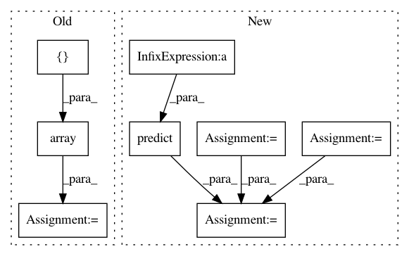

13b86a857c1e9fb716c75c51646eaec5829b945d,trunk/SUAVE/Components/Energy/Networks/Propulsor_Surrogate.py,Propulsor_Surrogate,evaluate_thrust,#Propulsor_Surrogate#Any#,72
Before Change
thr = np.zeros([data_len,1])
for ii,_ in enumerate(altitude):
sfc[ii] = sfc_surrogate.predict([np.array([altitude[ii][0],mach[ii][0],throttle[ii][0]])])
thr[ii] = thr_surrogate.predict([np.array([altitude[ii][0],mach[ii][0],throttle[ii][0]])]) //This is the fix when sklearn is update.
F = thr
After Change
// Unpack the conditions
conditions = state.conditions
// rescale altitude for proper surrogate performance
altitude = conditions.freestream.altitude/self.altitude_input_scale
mach = conditions.freestream.mach_number
throttle = conditions.propulsion.throttle
cond = np.hstack([altitude,mach,throttle])
//// Run the surrogate for a range of altitudes
//data_len = len(altitude)
//sfc = np.zeros([data_len,1])
//thr = np.zeros([data_len,1])
//for ii,_ in enumerate(altitude):
//sfc[ii] = sfc_surrogate.predict([np.array([altitude[ii][0],mach[ii][0],throttle[ii][0]])])\
//*self.sfc_input_scale*self.sfc_rubber_scale
//thr[ii] = thr_surrogate.predict([np.array([altitude[ii][0],mach[ii][0],throttle[ii][0]])])\
//*self.thrust_input_scale*self.thrust_rubber_scale
if self.use_extended_surrogate:
lo_blender = Cubic_Spline_Blender(0, .01)
hi_blender = Cubic_Spline_Blender(0.99, 1)
sfc = self.extended_sfc_surrogate(sfc_surrogate, cond, lo_blender, hi_blender)
thr = self.extended_thrust_surrogate(thr_surrogate, cond, lo_blender, hi_blender)
else:
sfc = sfc_surrogate.predict(cond)
thr = thr_surrogate.predict(cond)
sfc = sfc*self.sfc_input_scale*self.sfc_anchor_scale
thr = thr*self.thrust_input_scale*self.thrust_anchor_scale
F = thr
//from SUAVE.Core import Units
In pattern: SUPERPATTERN
Frequency: 3
Non-data size: 8
Instances
Project Name: suavecode/SUAVE
Commit Name: 13b86a857c1e9fb716c75c51646eaec5829b945d
Time: 2020-01-19
Author: timdmacdo@gmail.com
File Name: trunk/SUAVE/Components/Energy/Networks/Propulsor_Surrogate.py
Class Name: Propulsor_Surrogate
Method Name: evaluate_thrust
Project Name: nipy/dipy
Commit Name: ec2ae4f19fb7ee56bd8d33935b307a0dbc09c29a
Time: 2015-03-15
Author: arokem@gmail.com
File Name: dipy/reconst/tests/test_csdeconv.py
Class Name:
Method Name: test_csd_predict_multi
Project Name: suavecode/SUAVE
Commit Name: a482f9a6ce01bccb75413cd1ff212ccf047dd614
Time: 2020-01-31
Author: mclarke2@stanford.edu
File Name: trunk/SUAVE/Components/Energy/Networks/Propulsor_Surrogate.py
Class Name: Propulsor_Surrogate
Method Name: evaluate_thrust